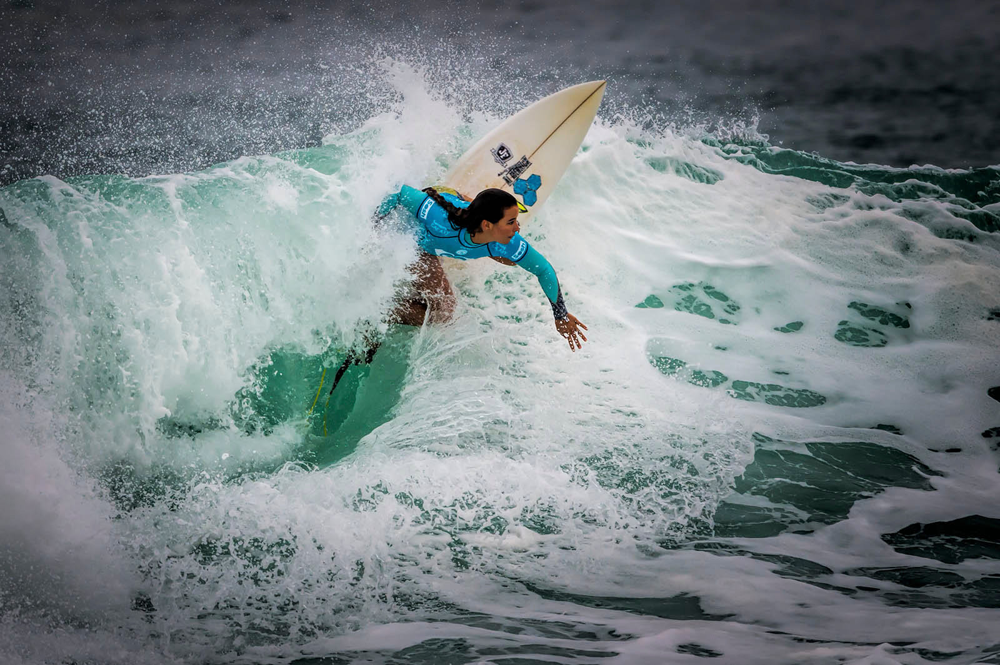
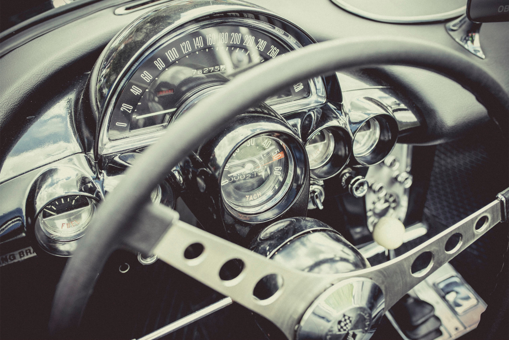

Dass das Meer nicht nur ein feindliches Element ist, sondern ein Zeittunnel, eine Molluske am Fels, die Luft der Avenida ist sicher nicht älter als der Mond. Schwach beleuchtete Gänge führen abwärts in die unendliche Finsternis des Tages.

Stil ist das Einzige, das man nicht kaufen kann. Er ist nicht in einer Einkaufstasche, in einer Marke oder an einem Preisschild. Er ist etwas, das sich von unserer Seele in die Außenwelt spiegelt - ein Gefühl.